mPraat demonstration
Contents
- mPraat and rPraat homepage
- How to cite this toolbox?
- Installation and help
- Read and plot TextGrid, PitchTier and Sound
- TextGrid
- Tier accessed both by index and name (TextGrid)
- Point tier (TextGrid)
- Point tier 'low-level access' (TextGrid)
- Interval tier (TextGrid)
- Interval tier 'low-level access' (TextGrid)
- Vectorized operations
- Overview of some TextGrid operations
- Repair continuity problem of TextGrid
- PitchTier
- Legendre polynomials modelling
- Process all files in folder
mPraat and rPraat homepage
rPraat and mPraat homepage: http://fu.ff.cuni.cz/praat/
Toolbox mPraat at github: https://github.com/bbTomas/mPraat
How to cite this toolbox?
We have invested a lot of time and effort in creating mPraat toolbox / rPraat package, please cite it when using it for data analysis.
Bořil, T., & Skarnitzl, R. (2016). Tools rPraat and mPraat. In P. Sojka, A. Horák, I. Kopeček, & K. Pala (Eds.), Text, Speech, and Dialogue (pp. 367–374). Springer International Publishing.
Download Tools rPraat and mPraat manuscript .pdf: http://fu.ff.cuni.cz/praat/boril_skarnitzl_2016_Tools_rPraat_and_mPraat_[manuscript].pdf
The final publication is available at Springer via http://dx.doi.org/10.1007/978-3-319-45510-5_42
Download BibTeX reference mpraatrpraat2016.bib: http://fu.ff.cuni.cz/praat/mpraatrpraat2016.bib
Installation and help
Download mPraat: mPraat-master.zip https://github.com/bbTomas/mPraat/archive/master.zip
To install mPraat, just unzip all files to any directory of your choice and Set Path (in Matlab) to this directory.
For help and examples, use command
help functionName
- or -
doc functionName
Read and plot TextGrid, PitchTier and Sound
tg = tgRead('demo/H.TextGrid'); figure, tgPlot(tg) pt = ptRead('demo/H.PitchTier'); figure, ptPlot(pt); [snd, fs] = audioread('demo/H.wav'); t = 0: 1/fs: (length(snd)-1)/fs; figure, tgPlot(tg, 3); % plot TextGrid with 2 empty subplots nTiers = tgGetNumberOfTiers(tg); subplot(nTiers+2, 1, 1); % plot Sound plot(t, snd); axis tight subplot(nTiers+2, 1, 2); % plot PitchTier ptPlot(pt);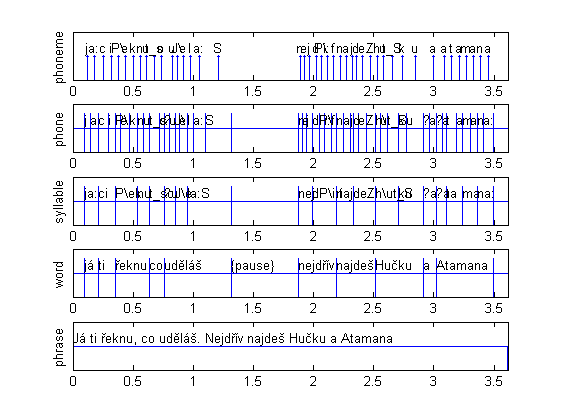 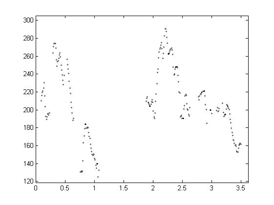 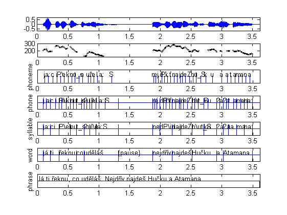
TextGrid
tg = tgRead('demo/H.TextGrid');
tiers = tgGetNumberOfTiers(tg)
tiers = length(tg.tier)
duration = tgGetTotalDuration(tg)
tier1name = tgGetTierName(tg, 1)
tiers =
5
tiers =
5
duration =
3.6160
tier1name =
phoneme
Tier accessed both by index and name (TextGrid)
tgIsPointTier(tg, 1) tgIsPointTier(tg, 'phoneme') tgIsIntervalTier(tg, 1) tgIsIntervalTier(tg, 'phoneme') type = tg.tier{1}.type type = tg.tier{tgI(tg, 'phoneme')}.type
ans =
1
ans =
1
ans =
0
ans =
0
type =
point
type =
point
Point tier (TextGrid)
numPoints = tgGetNumberOfPoints(tg, 1) numPoints = tgGetNumberOfPoints(tg, 'phoneme') time4 = tgGetPointTime(tg, 'phoneme', 4) label4 = tgGetLabel(tg, 'phoneme', 4)
numPoints =
43
numPoints =
43
time4 =
0.3235
label4 =
i
Point tier 'low-level access' (TextGrid)
numPoints = length(tg.tier{1}.T) % or: numPoints = length(tg.tier{tgI(tg, 'phoneme')}.T)
time4 = tg.tier{1}.T(4)
label4 = tg.tier{1}.Label{4}
t = tg.tier{1}.T(5:8)
numPoints =
43
time4 =
0.3235
label4 =
i
t =
0.3750 0.4354 0.5043 0.5627
Interval tier (TextGrid)
tierIndex = tgI(tg, 'word') tgIsPointTier(tg, 'word') tgIsIntervalTier(tg, 'word') type = tg.tier{4}.type % or: type = tg.tier{tgI(tg, 'word')}.type tierDuration = tgGetTotalDuration(tg, 'word') tStart = tgGetStartTime(tg, 'word') tEnd = tgGetEndTime(tg, 'word') numIntervals = tgGetNumberOfIntervals(tg, 'word') t1 = tgGetIntervalStartTime(tg, 'word', 4) t2 = tgGetIntervalStartTime(tg, 'word', 4) dur = tgGetIntervalDuration(tg, 'word', 4) label = tgGetLabel(tg, 'word', 4)
tierIndex =
4
ans =
0
ans =
1
type =
interval
tierDuration =
3.6080
tStart =
0.0080
tEnd =
3.6160
numIntervals =
13
t1 =
0.3522
t2 =
0.3522
dur =
0.2800
label =
řeknu
Interval tier 'low-level access' (TextGrid)
numIntervals = length(tg.tier{4}.T1)
t1 = tg.tier{4}.T1(4)
t2 = tg.tier{4}.T2(4)
label = tg.tier{4}.Label{4}
lab = tg.tier{4}.Label(5:8)
numIntervals =
13
t1 =
0.3522
t2 =
0.6322
label =
řeknu
lab =
'co'
'uděláš'
'{pause}'
'nejdřív'
Vectorized operations
labelsOfInterest = {'i', 'i:', 'e', 'e:', 'a', 'a:', 'o', 'o:', 'u', 'u:'};
tierInd = tgI(tg, 'phone');
condition = ismember( tg.tier{tierInd}.Label, labelsOfInterest );
count = sum(condition)
dur = tg.tier{tierInd}.T2(condition) - tg.tier{tierInd}.T1(condition);
meanDur = mean( dur )
figure, hist(dur)
count =
19
meanDur =
0.0632
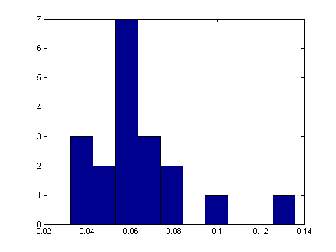 Overview of some TextGrid operations
For all functions, see help for description and example of use.
tg = tgRead('demo/H.TextGrid'); figure, tgPlot(tg) tg = tgRemoveTier(tg, 'syllable'); tg = tgRemoveTier(tg, 'phrase'); tg = tgRemoveTier(tg, 'phone'); ind = tgGetPointIndexNearestTime(tg, 'phoneme', 1.5); tg = tgSetLabel(tg, 'phoneme', ind, '!Q!'); tg = tgInsertPoint(tg, 'phoneme', 1.6, 'NEW'); tg.tier{tgI(tg, 'phoneme')}.T(30: 40) = []; % remove points tg.tier{tgI(tg, 'phoneme')}.Label(30: 40) = []; tg = tgDuplicateTier(tg, 'word', 2); tg = tgSetTierName(tg, 2, 'WORD2'); tg = tgRemoveIntervalBothBoundaries(tg, 'WORD2', 6); tg = tgSetLabel(tg, 'WORD2', 5, ''); tg = tgInsertInterval(tg, 'WORD2', 0.9, 1.7, 'NEW LAB'); ind = tgGetIntervalIndexAtTime(tg, 'WORD2', 2.3); tg = tgRemoveIntervalBothBoundaries(tg, 'WORD2', ind); figure, tgPlot(tg) tgNew = tgCreateNewTextGrid(0, 5); tgNew = tgInsertNewIntervalTier(tgNew, 1, 'word'); tgNew = tgInsertInterval(tgNew, 1, 2, 3.5, 'hello'); tgNew = tgInsertInterval(tgNew, 1, 4, 4.8, 'world'); tgNew = tgInsertNewPointTier(tgNew, 2, 'click'); tgNew = tgInsertPoint(tgNew, 2, 2, 'click'); tgNew = tgInsertPoint(tgNew, 2, 4, 'click'); figure, tgPlot(tgNew) tgWrite(tgNew, 'demo/ex_output.TextGrid');
 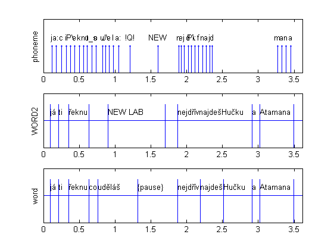 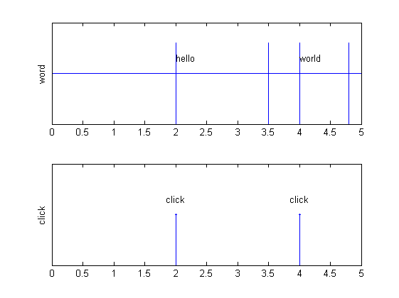
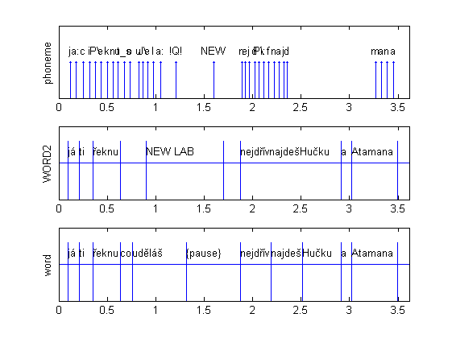 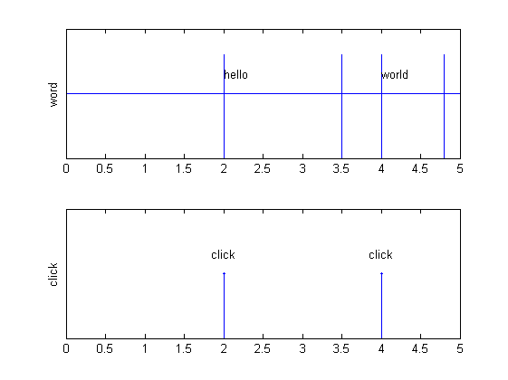 Repair continuity problem of TextGrid
Repairs problem of continuity of T2 and T1 in interval tiers. This problem is very rare and it should not appear. However, e.g., automatic segmentation tool Prague Labeller produces random numeric round-up errors featuring, e.g., T2 of preceding interval is slightly higher than the T1 of the current interval. Because of that, the boundary cannot be manually moved in Praat edit window.
tgProblem = tgRead('demo/H_problem.TextGrid'); tgNew = tgRepairContinuity(tgProblem); tgWrite(tgNew, 'demo/H_problem_OK.TextGrid'); tgNew2 = tgRepairContinuity(tgNew); % no problem in repaired TextGrid
Problem found [tier: 2, int: 16, 17] t2 = 0.951000010000, t1 = 0.951000000000. New value: 0.951000005000. Problem found [tier: 2, int: 24, 25] t2 = 2.048900000010, t1 = 2.048900000000. New value: 2.048900000005. Problem found [tier: 4, int: 2, 3] t2 = 0.215900000000, t1 = 0.215899900000. New value: 0.215899950000. Problem found [tier: 4, int: 5, 6] t2 = 0.760000000000, t1 = 0.760100000000. New value: 0.760050000000.
PitchTier
Transform Hz to semitones (ST), cut the original pitchtier along the TextGrid, make interpolated contour.
pt = ptRead('demo/H.PitchTier'); pt = ptHz2ST(pt, 100); % conversion of Hz to Semitones, reference 0 ST = 100 Hz. subplot(3,1,1) ptPlot(pt); xlabel('Time (sec)'); ylabel('Frequency (ST)'); subplot(3,1,2) tg = tgRead('demo/H.TextGrid'); labelsOfInterest = tg.tier{tgI(tg, 'word')}.Label(2:6) .' pt2 = ptCut0(pt, tgGetIntervalStartTime(tg, 'word', 2), tgGetIntervalEndTime(tg, 'word', 6)); ptPlot(pt2); xlabel('Time (sec)'); ylabel('Frequency (ST)'); subplot(3,1,3) pt2interp = ptInterpolate(pt2, pt2.t(1): 0.001: pt2.t(end)); ptPlot(pt2interp); xlabel('Time (sec)'); ylabel('Frequency (ST)'); ptWrite(pt2interp, 'demo/H_cut_interp.PitchTier')
labelsOfInterest =
'já' 'ti' 'řeknu' 'co' 'uděláš'
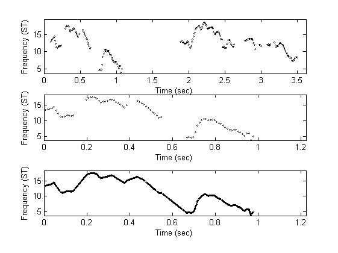 Legendre polynomials modelling
% Orthogonal basis ptLegendreDemo() % Cut the PitchTier pt = ptRead('demo/H.PitchTier'); pt = ptHz2ST(pt, 100); pt = ptCut(pt, 3); % cut PitchTier from t = 3 sec and preserve time % Model it using Legendre polynomials c = ptLegendre(pt) % Reconstruct the contour from these 4 coefficients leg = ptLegendreSynth(c); ptLeg = pt; ptLeg.t = linspace(ptLeg.tmin, ptLeg.tmax, length(leg)); ptLeg.f = leg; figure plot(pt.t, pt.f, 'ko'); xlabel('Time (sec)'); ylabel('F0 (ST re 100 Hz)'); hold on plot(ptLeg.t, ptLeg.f, 'b') hold off axis tight
c = 10.2782 -2.8105 -0.3033 1.7146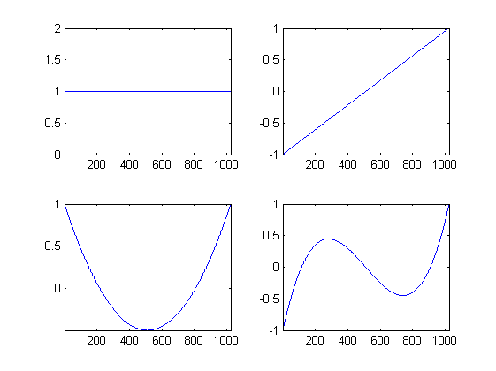 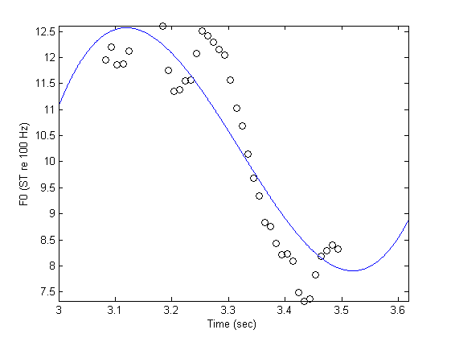
Process all files in folder
inputFolder = 'experiment1/data'; listFiles = dir([inputFolder '/*.TextGrid']); % Beware of case-sensitive file system!
for (I = 1: length(listFiles)) file = listFiles(I).name; if listFiles(I).isdir continue end fileName = file(1:end-9); fileTextGrid = [inputFolder, '/', fileName, '.TextGrid']; filePitchTier = [inputFolder, '/', fileName, '.PitchTier']; fileSound = [inputFolder, '/', fileName, '.wav']; % tg = tgRead(fileTextGrid); pt = ptRead(filePitchTier); % your code % end